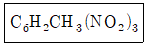
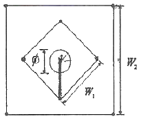
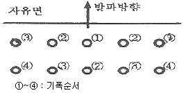
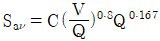
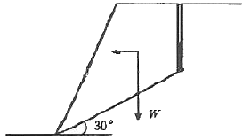
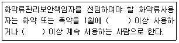

화약류관리기사 (2008-09-07 기출문제)
1과목: 일반화약학
1. 뇌관에 관한 설명 중 틀린 것은?
- 공업뇌관에 전기적 점화장치를 달아 놓은 것을 전기뇌관이라 한다.
- 구리, 알루미늄 등의 금속 관체에 첨장약, 기폭약을 충전한 것이다.
- 첨장약의 주성분은 TNT와 N6이다.
- 공업뇌관을 습기가 많은 곳에 놓아두면 흡습하여 발화되기 어렵다.
(정답률: 84%)

2. 도화선의 내수성 시험에서 시료는 물 속에 몇 시간 이상 담근 후 꺼내어 시험해야 하는가?
- 0.5
- 1
- 1.5
- 2
(정답률: 알수없음)
3. 뇌홍에 대한 설명이 아닌 것은?
- 화학식은 Hg(ONC)2이다.
- 비중은 α형의 것은 4.71, β형인 것이 4.93이다.
- KCIO3을 첨가하여 폭분으로 사용한다.
- 안전을 위해 물 속에 저장한다.
(정답률: 알수없음)
4. 약경 32mm, 약량 125g의 50% Dynamite를 순폭시험한 결과 순폭도는 7이었다. 시간이 경과한 후 동일한 조건으로 다시 시험하였더니 최대 순폭거리가 160cm이었다. 순폭도는 얼마나 감소하였는가?
- 1
- 2
- 3
- 5
(정답률: 알수없음)
5. 발화하면 바로 폭발하고, 강압에서도 사압현상을 나타내지 않은 기폭약은?
- 질화납
- 뇌홍
- DDNP
- 헥소겐
(정답률: 알수없음)
6. 다이너마이트의 포장상자에 표시된 STRENGTH(%, 폭력)의 기준에 대한 설명으로 옳은 것은? (단, EWS는 Relative Weight Strength이고, EBS는 Relative Bulk Strength이다.)
- TNT를 기준약으로 하여 순폭시험으로 산출되는 RWS이다.
- TNT를 기준약으로 하여 순폭시험으로 산출되는 RBS이다.
- 블라스팅 젤라틴을 기준약으로 하여 탄동구포시험으로 산출되는 RWS이다.
- 블라스팅 젤라틴을 기준약으로 하여 탄동구포시험으로 산출되는 RBS이다.
(정답률: 알수없음)
7. 화약류의 타격강도 시험은 어느 시험으로 하는가?
- 낙추시험
- 가열시험
- 마찰시험
- 순폭시험
(정답률: 알수없음)
8. 다음 중 TNT의 성질이 아닌 것은?
- 물에 잘 녹으므로 흡습성이 크다.
- 피크르산과는 달리 금속과 접촉하여도 예민한 금속염류를 만들지 않는다.
- 비중이 1.6에서 폭속이 약 7000m/s이다.
- 충격감도는 피크르산보다 둔감하다.
(정답률: 알수없음)
9. 다음 중 피크르산의 합성원료가 아닌 것은?
- 페놀
- 황산
- 질산
- 무수초산
(정답률: 알수없음)
10. 뇌관 1개의 저항이 1.4Ω인 전기뇌관 20발을 직렬로 결선하여 제발하려면 몇 V의 전압이 필요한가? (단, 단선 1m의 저항은 0.02Ω, 단선의 총연장은 100mm, 발파기의 내부저항은 0. 소요전류는 2A이다.)
- 30
- 60
- 70
- 100
(정답률: 알수없음)
11. 다음 화학식은 어느 물질을 나타내는 것인가?

- 테트릴
- TNT
- 피크르산
- 펜트리트
(정답률: 알수없음)
12. 산소 공급제로만 구성된 것이 아닌 것은?
- KNO3, NH4CIO4
- NaNO3, KCIO4
- BaCl2, BaSO4
- NaCIO4, KCIO3
(정답률: 알수없음)
13. 폭속에 관한 설명으로 옳은 것은?
- 폭속이 큰 폭약일수록 파괴력은 작아진다.
- 약포의 지름이 크면 폭속은 작아진다.
- 밀폐도가 높을수록 폭속은 크게 된다.
- 충전 비중을 작게 하면 폭속은 크게 된다.
(정답률: 알수없음)
14. 화약류의 사용에 대한 설명으로 틀린 것은?
- 지하수가 많은 갱내는 함수폭약이 적합하다.
- 겨울에는 난동 또는 부동 다이너마이트를 사용한다.
- 장마철에는 습기에 약한 질산암모늄 폭약을 사용하지 않는다.
- 갱내에서는 HCl가스가 발생하는 칼릿 폭약을 사용한다.
(정답률: 알수없음)
15. TNT 1g 당 산소평형 값(g)은 얼마인가?
- -0.74
- 0
- +0.035
- +0.2
(정답률: 알수없음)
16. 일반적으로 습면약은 약 몇 ℃에서 건조하는가?
- 0℃ 이하
- 0~10℃
- 40~50℃
- 70℃ 이상
(정답률: 알수없음)
17. 뇌관에서 6호와 8호는 다음 중 어떠한 차이점으로 구분하는가?
- 관체의 바깥지름
- 장약의 양
- 관체의 안지름
- 내관의 유무
(정답률: 알수없음)
18. 흑색화약에 대한 설명으로 틀린 것은?
- 습기를 피하면 장기간 저장하여 사용이 가능하다.
- 밀폐 용기 중에서 폭굉을 하고 폭연은 하지 않는다.
- 도화선의 심약으로 사용된다.
- 마찰, 충격에 민감하다.
(정답률: 알수없음)
19. 질산암모늄 폭약의 예감제로 사용되는 것은?
- 질산
- 황
- 디니트로나프탈렌
- Al 분말
(정답률: 82%)
20. 연주압축시험(Hess brisance test)에서 사용하는 연주의 크기로 옳은 것은?
- 직경 40mm, 높이 30mm
- 직경 50mm, 높이 30mm
- 직경 40mm, 높이 60mm
- 직경 50mm, 높이 60mm
(정답률: 알수없음)
2과목: 발파공학
21. 발파진동의 특성에 대한 설명으로 가장 거리가 먼 것은?
- 발파진동에 의한 주변구조물이나 시설물의 피해는 지반진동과 폭풍압에 의한 피해로 나눌 수 있다.
- 실험결과에 의하면 발파로 인하여 발생하는 총 에너지중에서 0.5~20%가 탄성파로 변환되어 발파진동으로 소비된다.
- 발파에 의하여 발생하는 탄성파가 암반중을 전파함으로서 지면에서는 진폭과 주기를 갖는 진동으로 나타난다.
- 지반운동은 일반적으로 변위, 입자속도, 기속도의 3성분과 진폭으로 표시된다.
(정답률: 알수없음)
22. Pre-splitting과 Trom blasting에 관한 설명 중 가장 거리가 먼 것은?
- 조절발파공법으로서 두 공법 모두 주 발파부분이 발파된 후 점화된다.
- 이 두 공법에 있어 발파공의 장약밀도는 유사하며 발파공의 직경으로부터 계산된다.
- Trim blasting의 천공간격은 Pre-splitting에서 보다 길게 한다.
- 이 두 공법의 구속조건을 비교할 때 Pre-splitting의 저항선은 Trim blasting보다 훨씬 크다.
(정답률: 알수없음)
23. 벤치 발파시 백브레이크(Back Break)를 줄이기 위한 방법으로 틀린 것은?
- 천공방향을 수직으로 하지 않고 경사를 둔다.
- 천공간격을 최소저항선의 0.8~1.0배 장도로 약간 좁게 한다.
- 전색의 길이는 최소저항선의 1.0~1.5배 정도로 하며, 지나치게 길게 하지 않는 것이 좋다.
- 전회 발파의 파쇄암을 벤치 하부에 일부 두는 것이 좋다.
(정답률: 10%)
24. 인장강도가 150kgf/cm2인 신선한 암반에 직경 75mm 비트를 사용하여 발파공을 천공하고 Pre-splittung 발파를 실시하였다. 발파공내에 작용하는 압력이 1000kgf/cm2인 경우 발생되는 균열반경은?
- 12.8cm
- 23.7cm
- 32.8cm
- 42.7cm
(정답률: 0%)
25. 다음 중 발파비산의 방지대책으로 틀린 것은?
- 장약약을 피하고 기폭방법에서 정기폭보다 역기폭을 사용한다.
- 공발이 발생하지 않도록 전색을 충분히 한다.
- 천공오차를 줄여 국부적인 장약공의 집중을 피한다.
- 암석의 자유면 또는 비석을 방지하고 싶은 방향 쪽의 암반 위에 blasting mat 등의 방호구를 덮는다.
(정답률: 0%)
26. 그림과 같은 펑행공 심빼기 발파에서 무장약공의 직경 ø=152mm이다. 첫 번째 정방형의 한변 길이 W1과 두 번째 정방형의 한변 길이 W2를 계산한 것 중 맞는 것은?

- W1=215mm, W2=452mm
- W1=322mm, W2=683mm
- W1=451mm, W2=755mm
- W1=534mm, W2=957mm
(정답률: 알수없음)
27. 벤치 발파에서 계단높이(H)와 저항선(B)의 비율 H/B가 4보다 작은 경우 제발발파를 한다면 공간격(S)을 구하는 식으로 맞는 것은?
- S=2.0B
- S=1.4B
- S=(H+2B)/3
- S=(H+7B)/8
(정답률: 알수없음)
28. 소음의 전파에서 음원으로부터 20m 지점의 지향지수가 5dB이라면 지향계수는 얼마인가?
- 3.16
- 4.16
- 5.36
- 6.36
(정답률: 알수없음)
29. 벤치발파에서 공저 장약밀도(Ib)를 단위 천공길이당 폭약량(kg/m)으로 정의할 때, 64mm 직경의 발파공에 장약밀도 0.8kg/ℓ인 ANFO를 장전할 때 공저 장약밀도는?
- 약 1.6kg/m
- 약 2.6kg/m
- 약 3.6kg/m
- 약 4.6kg/m
(정답률: 알수없음)
30. 발파를 위한 천공작업을 할 때에는 다음 규정을 준수하여야 한다. 틀린 것은?
- 일차 발파된 지역에서의 천공은 전지역에 폭파되지 않은 화약의 유무를 세밀히 조사하여 확인될 때까지 실시하여서는 안된다.
- 천공구멍의 크기는 사용할 화약류의 직경보다 커야 한다.
- 천공작업과 장전작업은 안전관리상 가급적 동일지역에서 병행하여 실시하여야 한다.
- 불발된 장전구멍에서부터 15미터 이내에서는 동력기계를 이용한 천공작업을 해서는 안된다.
(정답률: 알수없음)
31. 직경이 100m인 무장약공 4개를 평행공 심발발파시 자유면으로 활용하기 위해 천공한 경우의 자유면 효과는 몇 mm 직경의 무장약공 1개를 천공한 경우와 동일한가?
- 150mm
- 200mm
- 300mm
- 400mm
(정답률: 알수없음)
32. 발파비용의 계산에 있어서는 단순히 암석의 발파뿐만 아니라 그 외의 모든 작업에서 생기는 원인들을 고려해야 하는데 다음 설명 중 옳은 것은?
- 공경이 클수록 단위체적당 천공비용은 늘어난다.
- 단위체적당 장약에 드는 비용은 공경이 클수록 줄어든다.
- 적재운반비용은 사용기기와 적재용량에 좌우되며 적재용량이 작을수록 비용은 줄어든다.
- 소할발파 비용은 발파 전체 비용 중 간접비에 해당하므로 발파비용의 계산에는 일반적으로 고려하지 않는다.
(정답률: 알수없음)
33. 다음 중 누두공 시험에 대한 설명으로 틀린 것은?
- 누두공 시험의 결과는 경험적으로 L=CW3으로 표현되는 실험식으로 정리되고 있다.
- 적당한 폭약을 적당한 깊이에 장전해서 폭파하여 그 결과 생기는 누두공에 대해 관측하는 시험이다.
- 근래에는 소형의 모형실험으로 대신하는 경우가 많다.
- 폭약의 위력이나 암석발파에 대한 저항성을 알고, 약량산정을 위한 자료를 얻을 목적으로 실시한다.
(정답률: 알수없음)
34. 다음 중 분산장약(Deck charge)에 대한 설명으로 틀린 것은?
- 발파공내 주상장약을 기폭시간을 달리하여 분할하는 것을 분산장약이라 한다.
- 분할된 폭약 사이에는 전색물로 충전하여야 한다.
- 일반적으로 건조한 발파공의 삽입 전색장을 습윤한 발파공의 전색장보다 크게 한다.
- 기폭순서는 상부 자유면에 가까운 폭약부터 기폭시킨다.
(정답률: 알수없음)
35. 폭풍압의 특성에 대한 설명으로 가장 올바른 것은?
- 폭풍압은 건물내에 있는 사람에게 더 큰 영향을 미친다.
- 노천 채석장 발파 시 발생하는 폭풍압의 주파수는 100Hz 이상의 고주파가 우세하다.
- 100Hz 이상의 고주파 폭풍압은 주로 구조물에 피해를 준다.
- 폭풍압은 청면한 날씨 뒤 심한 안개가 낀 날 낮게 나타난다.
(정답률: 알수없음)
36. 시험발파로부터 V(cm/sec)=160(R/√W)-1.61의 발파진동식을 얻은 현장에서 다음 그림과 같이 벤치발파를 게획할 때 50m 거리에서 예상되는 발파진동의 최대 크기는 얼마인가? (단, 각 공당 5kg의 폭약을 사용하였으며, R 및 W의 단위는 각각 m, kg)

- 약 1.08cm/sec
- 약 1.88cm/sec
- 약 2.60cm/sec
- 약 3.28cm/sec
(정답률: 알수없음)
37. 전기뇌관을 이용함 발파의 설명으로 옳은 것은?
- 전기뇌관 각선의 이음부가 일부 물에 잠겨 있어도 전기뇌관은 내수성이 양호하므로 그대로 발파해도 지장이 없다.
- 다수의 장약을 직렬결선으로 제발시킬 경우 그 중 1개의 전기뇌관의 백금전교가 잘라져 있으면 그 장약만이 불발된다.
- 지발발파는 제발발파에 비해 폭음이나 진동이 적고, 또 암석의 파쇄도나 비산하는 거리도 적당하다.
- 발파모선은 피복이 완전히 절연되어 있으므로 다소의 누설전류가 있어도 상관없다.
(정답률: 알수없음)
38. Kuzentsov(1937)는 TNT의 양과 지질구조와의 관계에서 파쇄입자의 평균크기에 대해 연구하였다. 그의 평균입자크기를 예측하는 식

에서 Q가 의미하는 것은?- 암석계수
- 발파공당 파괴암석의 체적
- 발파공당 TNT의 양
- 실제 사용폭약의 강도
(정답률: 알수없음)
39. 일반 계단식 발파에서 천공경이 75mm라면 Gustaffson의 식에 의한 발파공 하부의 최대저항선은 얼마인가?
- 275.4cm
- 296.2cm
- 337.5cm
- 367.3cm
(정답률: 알수없음)
40. 폭약이 기폭되면 폭약 내부에서는 폭굉압이 발생하는데, 이 폭굉압은 동적 폭굉압과 정적 압력으로 나눌 수 있다. 이 중 정적 압력과 관계없는 것은?
- 폭발반응 생성물의 양
- 폭발반응 생성물의 상태
- 반응 속도
- 용기의 크기
(정답률: 알수없음)
3과목: 암석역학
41. 터널설계와 관련한 경험적 설계방법 중에서 지보를 설치하지 않고 자립할 수 있는 시간을 얻기 위하여 가장 필요한 암반의 공학적 분류법은 어떤 것인가?
- 암반하중 분류법(Terzaghi 분류법)
- SMR 분류법
- RMR 분류법
- Q 분류법
(정답률: 알수없음)
42. 암석의 삼축압축시험에서 일반적으로 관찰되는 현상과 거리가 먼 것은?
- 봉압(confining pressure)이 커질수록 암석은 연성적(ductile) 거동을 한다.
- 봉압(confining pressure)이 커질수록 암석의 강도는 증가한다.
- 압축시험기의 강성이 클수록 암석시료는 더 폭발적으로 파괴된다.
- 봉압(confining pressure)이 커질수록 암석의 잔류강도는 증가한다.
(정답률: 알수없음)
43. 다음 파괴 이론 중 중간 주응력이 파괴조건에 고려된 이론은?
- Coulomb 이론
- Tresca 이론
- Griffith 이론
- Huber-Hencky 이론
(정답률: 알수없음)
44. 다음 중 국제암반역학회(ISRM, 1978)에 제안된 불연속면의 표현 항목이 아닌 것은?
- 방향성
- 간격
- 거칠기
- 면적
(정답률: 17%)
45. 한변이 5cm인 정육면체 암석 블록이 경사면 위에 놓여 있다. 마찰각이 35°, 경사면의 각도가 40°일 때 이 암석의 블록의 거동은?
- 블록의 전도가 발생하지만 미끄러짐은 일어나지 않는다.
- 블록은 안정하고 미끄러짐이나 전도가 일어나지 않는다.
- 블록의 미끄러짐이 일어나지만 전도는 발생하지 않는다.
- 블록의 미끄러짐과 전도가 동시에 발생한다.
(정답률: 알수없음)
46. 탄성암반의 밀도가 2.7g/cm3이고, 측압계수가 K가 0.5일 때, 심도가 50m인 2차원 원형터널의 천정과 바닥에서의 경계응력은?
- 14.43kg/cm2
- 12.89kg/cm2
- 6.75kg/cm2
- 2.17kg/cm2
(정답률: 알수없음)
47. 다음 중 골재의 마모 정도를 측정하는 시험에 사용하는 것으로 적당한 것은?
- Mohs 경도계
- shore 경도계
- Los Angeles 시험기
- Rockwell 시험기
(정답률: 알수없음)
48. 암석변형에서 시간의존성을 나타내는 가장 기본적인 성질은 어느 것인가?
- 탄성
- 점성
- 소성
- 파괴
(정답률: 알수없음)
49. Mohr의 응력원에서 최대주응력(σ1)이 100MPa, 최소주응력(σ2)이 20MPa이라고 할 때 원의 중심과 반지름은 각각 얼마인가?
- 원의 중심=120MPa, 원의 반지름=80MPa
- 원의 중심=60Pa, 원의 반지름=40MPa
- 원의 중심=40MPa, 원의 반지름=60MPa
- 원의 중심=80MPa, 원의 반지름=120MPa
(정답률: 알수없음)
50. 암반의 변형특성에 대한 설명으로 틀린 것은?
- 암반의 변형특성은 암반내에 존재하는 불연속면의 성질 등에 의해 좌우된다.
- 암반의 풍화가 될수록 탄성계수가 저하된다.
- 암반은 공극률이 커질수록 변형계수는 커진다.
- 암반은 절리 간격이 작을수록 전단강도는 저하된다.
(정답률: 알수없음)
51. 수압파쇄시험을 통하여 얻을 수 있는 자료가 아닌 것은?
- 암반 내 최대 수평 주응력
- 암반 내 최소 수평 주응력
- 암반의 압축강도
- 암반의 인장강도
(정답률: 알수없음)
52. Barton의 절리면 전단강도를 계산하기 위하여 필요한 자료가 아닌 것은?
- 절리면에 작용하는 전단응력
- 절리면 거칠기계수
- 절리면의 압축강도
- 절리면의 기본마찰각
(정답률: 알수없음)
53. 다음 중 응력불변량(stredd invariants)이 아닌 것은?
- σx+σy+σz
- σxσy+σyσz+σzx-τxy2-τyz2-τzx2
- σxσyσz-σxτyz2-σyτzx2-σzτxy2+2τxyτyzτzx
- (1+σx)(1+σy)(1+σz)
(정답률: 알수없음)
54. 100cm2의 절리면에 대한 전단시험을 실시한 후 Mohr-Coulomb의 전단파괴식을 적용한 결과 30°의 내부 마찰각을 얻었다. 1톤의 수직하중을 주었을 때 전단파괴강도가 0.8MPa이었다면 2.5톤의 수직하중에서의 전단파괴강도는 얼마인가? (단, 중력가속도는 10m/s2로 한다.)
- 1.55MPa
- 1.67MPa
- 1.99MPa
- 2.21MPa
(정답률: 알수없음)
55. 인장강도를 측정하기 위한 직접인장시험, 압열인장시험, 굴곡시험에서 구해진 인장강도의 일반적인 크기 순서로 맞는 것은? (단, 동일 암석 시료에 대해서 시험을 실시)
- 직접＞압열＞굴곡
- 압열＞굴곡＞직접
- 굴곡＞압열＞직접
- 압열＞직접＞굴곡
(정답률: 알수없음)
56. 다음 그림과 같은 형상의 완전 건조된 사면에 지진이 발생하여 0.⑤g의 지진 가속도(α)가 사면에 가해졌다. 암괴의 중량(W) 0.1MN, 불연속면의 점착력 0, 불연속면의 경사각 30°, 불연속면의 마찰각 30°인 경우 사면의 안전율은? (단, 지진에 의한 가속도는 등가의 정적인 힘 σW로 대체한다.)

- 0.9
- 1.2
- 1.5
- 1.8
(정답률: 알수없음)
57. 암석의 삼축압축시험을 실시한 후 시험결과를 Hoek-Brown파괴조건식으로 적용한 결과 m과 s는 각각 5, 1로 계산되었다. 최소주응력이 25MPa로 주어진 지반에서 파괴시의 최대주응력은? (단, 신선암에 대한 일축압축강도값은 100MPa이다.)
- 120MPa
- 150MPa
- 175MPa
- 200MPa
(정답률: 알수없음)
58. 암반사면의 파괴형태 중 탁원한 불연속면의 경사방향이 사면의 경사방향과 거의 일치하며, 사면의 경사가 불연속면의 경사보다 급한 경우 발생 가능한 것은?
- 원호파괴
- 평면파괴
- 쐐기파괴
- 전도파괴
(정답률: 알수없음)
59. 암석의 내부 마찰각을 Φ, 최소주응력 작용방향과 파괴면이 이루는 각을 α라 할 때, 옳은 관계식은?
- α=90°+Φ/2
- α=45°+Φ/2
- α=90°-Φ/2
- α=45°+-/2]
(정답률: 알수없음)
60. 서울지역 화강암의 탄성파 전파속도를 측정한 결과 P-파가 3200m/sec, S-파가 1700m/sec였다. 이 때 암석의 비중이 2.5라면 암석의 동강성을 (Gd)은 얼마인가?
- 2.89×105kg/cm2
- 2.89×106kg/cm2
- 7.23×104kg/cm2
- 7.23×105kg/cm2
(정답률: 알수없음)
4과목: 화약류 안전관리 관계 법규
61. 화약과 비슷한 추진적 폭발에 사용될 수 있는 것으로서 대통령령이 정하는 것에 포함되지 않는 것은?
- 산화납을 주로 한 화약
- 염소산염을 주로 한 화약
- 황산알루미늄을 주로 한 화약
- 크롬산납을 주로 한 화약
(정답률: 알수없음)
62. 다음 ()안에 순서대로 들어갈 말로 옳은 것은?

- 10kg, 1월
- 20kg, 3월
- 50kg, 6월
- 100kg, 1년
(정답률: 알수없음)
63. 화약류 사용자가 화약류 취급소를 설치하지 않고 화약류를 사용했을 경우 행정처분기준은? (단, 2회 위반)
- 허가 취소
- 6월 효력정지
- 3월 효력정지
- 1월 효력정지
(정답률: 알수없음)
64. 지하 1급저장소의 지반의 두께가 13m일 경우 저장할 수 있는 폭약량으로 맞는 것은? (단, 법령상 최대기준수량임)
- 5톤 이하
- 7톤 이하
- 9톤 이하
- 11톤 이하
(정답률: 알수없음)
65. 화약류 1급저장소에 폭약 35톤을 저장하고자 할 때 석유저장시설과의 보안거리를 얼마이상이어야 하는가? (단, 법령상 최단 거리임)
- 520m
- 470m
- 260m
- 140m
(정답률: 알수없음)
66. 운반신고를 하지 아니하고 운반할 수 있는 화약류의 종류 및 수량으로 맞는 것은?
- 화약 50kg
- 장난감용 꽃불류 500kg
- 도폭선 2500m
- 총용뇌관 20만개
(정답률: 알수없음)
67. 화약류의 제조업을 영위하고자 하는 사람은 제조소마다 행정안전부령이 정하는 바에 의하여 누구의 허가를 받아야 하는가?
- 행정안전부장관
- 경찰청장
- 지방경찰청장
- 경찰서장
(정답률: 알수없음)
68. 화약류 판매업자가 비치하는 화약류 양도ㆍ양수 명세부의 보존 기간으로서 옳은 것은?
- 기입을 환료한 날로부터 5년
- 기입을 환료한 날로부터 4년
- 기입을 환료한 날로부터 3년
- 기입을 환료한 날로부터 2년
(정답률: 알수없음)
69. 화약류운반신고필증을 지체없이 반납하여야 할 사유로 볼 수 없는 것은? (단, 법규상의 내용에 한함)
- 화약류를 운반하지 아니하게 된 때
- 운반기간이 경과한 때
- 운반을 완료한 때
- 운반중 교통사고가 난 떄
(정답률: 30%)
70. 법인의 대표자나 법인 또는 개인의 대리인, 사용인 그 밖의 종업원이 그 법인 또는 개인의 업무에 관하여 총포ㆍ도검ㆍ화약류 등 단속법을 위반한 때에 처벌로 옳은 것은?
- 총포ㆍ도검ㆍ화약류 등 단속법을 위반한 행위자를 벌하는 외에 그 법인 또는 개인에 대하여는 처벌하지 않는다.
- 총포ㆍ도검ㆍ화약류 등 단속법을 위반한 행위자를 벌하는 외에 그 법인 또는 개인에 대하여도 각 해당조항의 벌금형으로 벌한다.
- 총포ㆍ도검ㆍ화약류 등 단속법을 위반한 행위자를 벌하는 외에 그 법인 또는 개인에 대하여도 각 해당 조항의 과태료를 처분한다.
- 총포ㆍ도검ㆍ화약류 등 단속법을 위반한 행위자를 벌하는 외에 그 법인 또는 개인에 대하여도 위반자와 같이 처벌한다.
(정답률: 알수없음)
71. 화약류 안정도시험과 관련한 설명으로 옳지 않은 것은?
- 유리산시험은 질산에스텔 및 그 성분이 들어있는 화약에 있어서는 유리산 시험시간이 6시간 이상인 것을 안정성이 있는 것으로 한다.
- 내열시험은 탕전기의 온도를 섭씨 65도로 유지하여 내열시험시간이 6분 이상인 것을 안정성이 있는 것으로 한다.
- 가열시험은 칭량병에 건조한 시료 약 10g을 넣고 이를 섭씨 75도의 시험기안에 48시간 넣어두고 줄어든 양을 측정하여 줄어든 양이 1/100 이하인 것을 안정성이 있는 것으로 한다.
- 안정도시험의 결과보고에는 시험을 실시한 화약류의 종류, 수량, 제조일, 시험실시연원일, 시험방법 및 시험성적을 포함해야 한다.
(정답률: 알수없음)
72. 지상 1급저장소의 위치ㆍ구조 및 설비의 기준에 관한 설명으로 틀린 것은?
- 건물은 단층의 철근콘크리트조나 벽돌콘크리트블록 또는 석조로 한다.
- 출입문은 2중문으로 하고 덧문에는 두께 3mm 이상의 철판으로 보강하되 2개의 이상의 자물쇠 장치를 한다.
- 창은 저장소의 규모에 따라 햇빛이 잘 들도록 저장소의 기초로부터 1.7m 이상의 높이로 한다.
- 저장소 안에는 10 lux 이상의 조명장치를 한다.
(정답률: 알수없음)
73. 화약류 발파시 대통령령이 정하는 기술상의 기준을 위반한 사람에 대한 벌칙은?
- 10년 이하의 징역 또는 2천만원 이하의 벌금
- 5년 이하의 징역 또는 1천만원 이하의 벌금
- 3년 이하의 징역 또는 700만원 이하의 벌금
- 2년 이하의 징역 또는 500만원 이하의 벌금
(정답률: 알수없음)
74. 꽃불류 사용의 기술상의 기준에 대한 설명으로 틀린 것은?
- 풍속이 5m/sec 이상일 때는 꽃불류의 사용을 중지해야 한다.
- 꽃불류를 사용하고자 하는 장소의 부근에는 소화작업에 필요한 장비를 갖추어야 한다.
- 쏘아 올리는 꽃불류는 20m 이상의 높이에서 퍼지도록 해야 한다.
- 꽃불류의 발사용 화약에 점화하여도 그 화약이 폭발 또는 연소되지 아니하는 때에는 그 발사통에 많은 양의 물을 넣고 10분 이상 경과한 후에 서서히 발사통을 눕히어 꽃불류를 꺼내야 한다.
(정답률: 50%)
75. 화약류 양도ㆍ양수 허가와 관련한 설명 중 옳지 않은 것은?
- 판매업자가 판매할 목적으로 화약류를 양도ㆍ양수하는 경우에도 양도ㆍ양수허가가 필요없다.
- 사용지가 특정되지 아니한 경우에는 양수하고자 하는 사람의 주소지를 관할하는 경찰서장의 허가를 받아야 한다.
- 화약류의 양도ㆍ양수허가의 유효기간은 2년을 초과할 수 없으며, 2회에 허가할 수 있는 화약류의 수량은 화약류 사용계획서에 기재된 그 연도의 1년간의 사용량을 초과할 수 없다.
- 화약류의 수입허가를 받은 사람이 그 수입과 관련하여 화약류를 양도ㆍ양수하는 경우에도 양도ㆍ양수허가가 필요없다.
(정답률: 30%)
76. 불발된 장약에 대한 조치 방법으로 틀린 것은?
- 점화 후 15분 이상(전기발파에 있어서는 점화기로부터 발파모선을 뗀 후 5분 이상)을 경과한 후가 아니면 화약류를 장정한 곳에 사람의 출입이나 접근을 금지하여야 한다.
- 불발된 천공된 구멍에 고무호오스로 물을 주입하고 그 물의 힘으로 메지와 화약류를 흘러나오게 하여 불발된 화약류를 회수한다.
- 불발된 천공된 구멍으로부터 60센티미터 이하(손으로 뚫은 구멍인 경우에는 30센티미터 이하)의 간격을 두고 평행으로 천공하여 다시 발파하고 불발된 화약류를 회수한다.
- 불발된 발파공에 압축공기를 넣어 메지를 뽑아내거나 뇌관에 영향을 미치지 아니하게 하면서 조금씩 장전하고 다시 점화하여 처리한다.
(정답률: 알수없음)
77. 불이 날 위험이 있는 일광건조장과 다른 시설과의 거리가 20m 이상인 때에는 어떻게 하여야 하는가?
- 그 시설간의 사이에 방폭벽을 설치한다.
- 그 시설간의 사이에 상록활엽수를 빽빽하게 심는다.
- 그 시설간의 사이에 간이흙둑을 설치한다.
- 경사 45도 이하로 흙둑을 쌓는다.
(정답률: 알수없음)
78. 경사 1급저장소의 흙둑 바깥면으로부터 몇 m 이상의 빈터를 두어 화재를 예방하여야 하는가? (단, 법령상 최소거리기준)
- 1.5m
- 2m
- 2.5m
- 3m
(정답률: 알수없음)
79. 2급 저장소의 화약류 최대 저장량으로 틀린 것은?
- 전기도화선:무제한
- 실탄 및 공포탄:2000만개
- 미진동파쇄기:100만개
- 도폭선:50km
(정답률: 알수없음)
80. 다음 중 운반표지를 하지 아니하고 운반할 수 있는 화약류의 수량으로 틀린 것은?
- 10kg 이하의 화약
- 5g 이하의 화약
- 10000개 이하의 총용뇌관
- 5000개 이하의 미진동파쇄기
(정답률: 알수없음)
5과목: 굴착공학
81. Q-시스템을 이용하여 폭 15m, 높이 11m인 고속철도터널의 천반에 설치할 록볼트의 길이를 결정하고자 한다. 이 터널의 굴착지보계수(ESR:Excavation Support Ratio)를 1이라고 한다면 천반에서의 록볼트 길이는?
- 4.25m
- 3.65m
- 6.⑤m
- 8.65m
(정답률: 알수없음)
82. 흙의 통일분류법에서 사용되는 제1문자에 대한 설명으로 틀린 것은?
- G:자갈
- S:모래
- C:점토
- O:이탄
(정답률: 알수없음)
83. 다음 중 인버트(invert)에 대한 설명으로 틀린 것은?
- 인버트는 강도를 증가시켜 지압에 대항할 목적으로 터널바닥에 설치하는 일종의 복공이다.
- 인버트는 작용압력이 작은 원지반에서는 생략하는 경우도 있다.
- 일반적으로 인버트 시공은 2차 복공 타설전에 실시한다.
- 인버트는 암반의 상태가 불량할수록 곡률반경을 크게하여 작용압력의 집중을 피해야 한다.
(정답률: 알수없음)
84. 두께 4m의 포화 점토층이 지표로부터 5m 깊이의 모래층 아래에 있으며, 지하수위는 지표면 아래 3m 깊이에 있다. 점토와 모래의 포화단위중량은 각각 19kN/m3, 20kN/m3이고, 지하수위 위에 있는 모래의 단위중량은 17kN/m3이다. 지표하 9m 길이에서의 유효연직응력은? (단, 물의 단위중량은 9.8kN/m3이다.)
- 약 60kN/m3
- 약 110kN/m3
- 약 160kN/m3
- 약 210kN/m3
(정답률: 알수없음)
85. 로드헤더를 이용한 굴착법의 특성으로 볼 수 없는 것은?
- 발파공법에 비하여 지반의 이완이 적다.
- 부분적인 경압에 대해서는 발파공법과 병용시공이 가능하다.
- 발파공법에 비해 터널 지보량이 증가한다.
- 분진의 발생량이 많아 환기 및 살수 설비가 필요하다.
(정답률: 알수없음)
86. 지하공동의 유지를 위해 설치하는 지보에 대한 설명으로 틀린 것은?
- 공동주벽이 붕괴하였을 때 암석파편이 공동내로 침입하는 것을 방지한다.
- 공동주벽에 작용하는 응력은 주벽 대신에 받는다.
- 공동의 단면적이 감소하는 것을 방지한다.
- 공동주벽면에 인장응력을 발생시켜 주벽이 파괴되지 않게 한다.
(정답률: 알수없음)
87. 원형공동의 천정부와 측벽부에 각각 슬롯을 굴착하고 플랫잿을 사용하여 초기 응력을 측정한 결과, 천정부의 응력은 50kg/cm2이고 측벽부의 응력은 100kg/cm2 이었다. 이지점의 초기 수직 응력은?
- 31.25kg/cm2
- 43.75kg/cm2
- 50kg/cm2
- 100kg/cm2
(정답률: 16%)
88. 지하 공동에 저장된 원유로부터 증발된 휘발성 기체의 유출을 막기 위한 조치로 적절하지 않은 것은?
- 저장공동 주위의 압력을 인위적으로 증가시킨다.
- 다단면 분할 굴착공법을 적용한다.
- 수봉 시설을 설치한다.
- 저장공동 주위에 소단면 수압터널을 여러 개 굴착한다.
(정답률: 알수없음)
89. 숏크리트의 습식공법과 비교하여 건식공법의 단점이 아닌 것은?
- 콘크리트의 품질관리가 어렵다.
- 장거리 암송에 부적합하다.
- 분진의 발생량이 비교적 많다.
- 리바운드량이 비교적 많다.
(정답률: 알수없음)
90. 터널의 내공변위 및 천단침하측정으로부터 얻을 수 있는 정보가 아닌 것은?
- 암반안정의 판단
- 최종 변위량의 예측
- 절리나 균열의 간격 및 발달형태
- 2차 복공 콘크리트의 타설시기에 대한 판단
(정답률: 알수없음)
91. 터널굴착공법 중 메세르(messer)공법에 대한 설명으로 맞는 것은?
- N치가 60 이하인 점토, 실트 등의 토사층 터널 굴착에는 부적합하다.
- 지반침하의 발생 가능성이 높다.
- 곡선 터널을 시공하기에 적합한 공법이다.
- 강널판의 배치를 검토하면 굴착단면을 자유로이 선정할 수 있다.
(정답률: 알수없음)
92. 터널 설계를 위한 지반조사에서 본조사 항복에 들어가지 않는 것은?
- 물리탐사
- 시추조사
- 기존자료조사
- 원위치시험
(정답률: 알수없음)
93. 다음 중 옹벽에 작용하는 토압의 크기 순서로 맞는 것은?
- 수동토압＞정지토압＞주동
- 정지토압＞수동토압＞주동
- 주동토압＞정지토압＞수동
- 수동토압＞주동토압＞정지
(정답률: 알수없음)
94. 무결암 상태에서 압축방향에 따른 강도의 이방성 정도가 가장 현저한 암석은?
- 화강암
- 화강섬록암
- 반려암
- 편암
(정답률: 알수없음)
95. 다음 중 강아치 지보공에 대한 설명으로 틀린 것은?
- 조립과 동시에 원지반을 지지하는 능력을 발휘할 수 있다.
- 막장의 자립시간이 짧은 암반의 지지에 유효하게 사용된다.
- 균열이 많고 굴착으로 인하여 붕괴 위험성이 있는 암반에는 사용할 수 없다.
- 강아치 지보공은 H 형강 등의 강재를 터널의 형태에 맞추어 가공하여 일정간격으로 타설한다.
(정답률: 알수없음)
96. 다음 중 절리의 전단강성(shear stiffness)의 단위는?
- MPa
- MPa/m
- MPa/m2
- MPaㆍm
(정답률: 알수없음)
97. 다음은 NATM 보조공법이다. 이 중 배수공법이 아닌 것은?
- 약액주입공법
- 디프웰공법
- 웰포인트공법
- 물빼기시추공법
(정답률: 알수없음)
98. 지반을 불연속체로 가정하여 해석하는 수치해석법은?
- 개별요소법
- 요한요소법
- 유한차분법
- 경계요소법
(정답률: 알수없음)
99. 지하 암반내에 직경 6m의 터널을 굴착하였다. 숏크리트에 작용하는 응력이 15000kg/m2이고, 숏크리트의 허용 전단응력이 150000kg/m2일 때, 숏크리트의 두께는? (단, Rabcewicz(1965)의 제안식을 이용)
- 2.6m
- 26cm
- 1.3m
- 13cm
(정답률: 알수없음)
100. 경사가 30°인 경사면 위에 중량 W의 블록이 놓여있다. 블록과 경사면 간의 점착강도가 0인 경우 한계평형조건에 따른 블록과 경사면 간의 마찰각은?
- 20°
- 30°
- 40°
- 50°
(정답률: 알수없음)
첨장약은 폭발물의 일종으로, 공업뇌관 등에서 사용됩니다. 이는 구리, 알루미늄 등의 금속 관체에 충전된 폭발물로, 전기뇌관 등에서 사용됩니다. 습기가 많은 곳에 놓아두면 흡습하여 발화되기 어렵습니다.